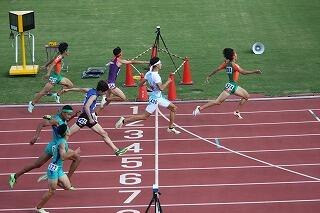

文字
背景
行間


部活動報告
 美術部・工芸部活動報告
美術部・工芸部活動報告
今年も千葉県高等学校総合文化祭 美術・工芸作品展に出品をしました。総合文化祭とは、ほぼ全ての千葉県の高校が参加する作品展です。美術部からは絵画を13点、工芸部からは陶芸や藍染など22点を出品しました。更に、今年全国大会にて展示した『ぱんでぃごⅡ世』も全国大会出品ブースにて展示しています。是非ご覧になってください。
千葉県高等学校総合文化祭 美術・工芸作品展
場所:千葉県立美術館
日時:11月12日(火)～11月17日(日)
9:00～16:30
入場無料


 第22回高校生マンガ・イラストグランプリ』で準グランプリを受賞
第22回高校生マンガ・イラストグランプリ』で準グランプリを受賞
日本デザイナー学院が主催するコンテスト『第22回高校生マンガ・イラストグランプリ』で2年石本真理佳さんが準グランプリを受賞しました。
受賞作品の全編は以下に掲載されていますので、ぜひご覧ください
工芸部活動報告
第44回佐倉市民文化祭･美術展に佐倉高校工芸部の作品が展示されます。藍染･陶芸･七宝の個性豊かな作品ばかりです。ぜひご覧になってください。
佐倉市民文化祭･美術展
会期：令和6年10月23日(水)～10月27日(日)
10時～18時(最終日16時まで)
会場：佐倉市美術館 2･3階

工芸部 第４８回全国高等学校総合文化祭美術・工芸部門参加
｢清流の国ぎふ総文2024｣の美術・工芸部門に、3年 小野田杷夏さんの作品｢ぱんでぃごⅡ世｣が展示されました。生徒交流会では、岐阜県の工芸である水うちわをイメージした絹絵うちわの制作体験を行いました。全国から集まった高校生と交流し、とても楽しむことが出来ました。｢ぱんでぃごⅡ世｣は、11月に行われる千葉県高等学校総合文化祭(千葉県立美術館)でも展示されます。ぜひご覧になってください。


 音楽部 第４８回全国高等学校総合文化祭合唱部門参加
音楽部 第４８回全国高等学校総合文化祭合唱部門参加
「清流の国ぎふ総文２０２４」の合唱部門が行われた可児市文化創造センターには、各県の代表による美しく想いのこもった歌声が響き渡りました。 私たちは、ミスター長嶋？も登場の学校紹介で会場をわかせた後、祭囃子の口唱歌（くちしょうが）を題材とした生命感あふれる「獅子舞」と、歌が生まれるときめきを伝えられるように細部までこだわって練習した「アポロンの竪琴」を披露しました。暖かい聴衆の皆さんの前で楽しく伸びやかに歌うことができとても良い経験になりました。


 華道部活動報告（母の日のアレンジメント）
華道部活動報告（母の日のアレンジメント）
５月１０日（金）母の日アレンジメント制作を楽しみました。

美術部 佐倉市中央公民館でガラス絵展示
佐倉市中央公民館で美術部が描いたガラス絵が公開されております。6月末までの間、外からも中からも無料で見ることができます。ガラス全面に浮遊する様々な生き物たちをご覧下さい。部員7人で５日間で描き上げました。


美術部 全日本学生美術展にて受賞
美術部の2年 清原花音さんが、上野の東京都美術館で毎年行われる全日本学生美術展に出品し、佳作を受賞しました。2/12(月)～18(日)に展示されます。昨年に引き続き2年連続の展示です。3/19(火)～22(金)に地域交流棟で行われる、さくらアート(書道部・工芸部・写真部・華道部・美術部合同展示)でも展示します。

 「大変」な冬に【陸上競技部】
「大変」な冬に【陸上競技部】
第３回考査も終わり、部活動が再開しました。今シーズンは総体県2種目入賞、関東1種目入賞、インターハイ準決勝進出、新人県3種目入賞、関東2種目入賞、等多くの大会で活躍・健闘・成長することができた1年でした。
夏は伸びたけど、冬も同じぐらい伸びる。大きく変われるのが冬、冬季練だよ、とミーティングで顧問の先生から話がありました。初日からグラウンドでみんなで汗を流しています。大変な寒い冬が始まりますが、ここをみんなで楽しく乗り越え、大きく変われるか。充実した冬を過ごしてほしいと思います。

 佐倉の日にしよう【陸上競技部】
佐倉の日にしよう【陸上競技部】
9/21（木）から４日間県大会が行われ、3種目で入賞、2種目で関東大会を決めました。その他、女子3000mでは入賞に僅かに届かなかった種目など、夏の練習の成果が出る形となりました。
http://www5c.biglobe.ne.jp/~iwa-m/results/2023/shinjin/OutputHtml/nans21v/shtml/TimeTable.html
「今日を佐倉の日にしよう」、毎日のミーティングで顧問の先生が言っていたことです。もっとやり切れたと思っている部員もいて、この悔しさを冬の練習、そして春に繋げてほしい。だからこそ、1日の練習、学校生活で成長してほしいと思っています。
北海道インターハイ結果報告！千葉県高校記録更新！！
１週間後の国体最終選考会にて国体種目になる300mHで千葉県高校記録を更新、決勝で出した36秒22は暫定ではありますが、今年度高校1位のタイム、歴代3位の記録となりました。引き続き頑張っていきたいと思います。
1・2年生は桧原湖で3泊4日の合同合宿を行い、心身ともに鍛えました。新人戦シーズンに向けて、日々努力しています。


 速報・インターハイ出場おめでとう！【陸上競技部】
速報・インターハイ出場おめでとう！【陸上競技部】
6/16（金）〜19（月）山梨県にて南関東総体が行われました。
県総体を勝ち抜いた2種目に出場、男子400mHで決勝6位で8月に行われる北海道インターハイの出場を決めました！
佐倉高校陸上競技部のインターハイ出場は39年ぶりだそうです。
インターハイはもちろんですが、来週の県選手権、新チームになり、きつい練習にみんなで取り組んでいます！引き続き応援よろしくお願いします！！


総体結果報告【陸上競技部】
4/21（金）22（土）地区総体・63種目出場、36種目自己新チーム新、36種目県大会出場
http://www5c.biglobe.ne.jp/~iwa-m/results/2023/2/soutai/OutputHtml/nans21v/shtml/TimeTable.html
5/11（木）-14（日）県総体・36種目出場、15種目自己新チーム新
http://www5c.biglobe.ne.jp/~iwa-m/results/2023/soutai/2023-5-11-14-soutai-pro.pdf
7種目予選突破、2種目南関東総体出場権獲得（男子400mH3位・女子400m5位）
大会の日は勿論でしたが、県大会に向けて準備した３週間、１日１日が中身が濃い日々でした、だからこそ成長できたし、嬉しい思いも悔しい思いも沢山できました。自分達のできることは全てやり切れたとも思います、だけどそれでも悔しさが残るところも。それを次のチーム、次のステージで頑張れるか。6月の関東大会、県選手権の上位大会もありますが、１年生のデビュー戦となる高校記録会もあります。定期考査と重なり、練習時間がしっかりと取れないこともありますが、文武両道でできてこそ、佐倉高陸上競技部員です。強く誇り高いチームになるためにもっと頑張っていきたいと思う総体でした。


強誇貢献、「しん」チームで挑む春【陸上競技部】
陸上競技部ですが、新しい顧問を招き入れ新体制で令和５年度始まっています。
～強誇貢献、「しん」チームで挑む春～ではじまったスローガン強く、誇り高いチームまではまだまだ届きません、だけど、「貢献」すること、それがチームにも個人にも大切なことを常に大事にして頑張ってきました。
いよいよ明日から総体が始まります、マネージャーから、２・３年生の選手に向けて、各選手のナンバーを手縫いした必勝ダルマの御守りが送られました。部員全員が総体を通して成長する事を顧問は楽しみにしています。（顧問）


美術部より
12日から19日まで東京都美術館で展示されます。
また、17日の授賞式(上野)で賞状授与されます。
 ダンス同好会 バレンタイン公演
ダンス同好会 バレンタイン公演


強誇貢献


JRC同好会活動報告
11月９日（水）に開催された千葉県青少年赤十字第２回高校メンバー協議会に参加してきました。
今回は人道支援について学んだ後、他校の生徒と協力して募金箱を作成し、千葉駅周辺で街頭募金活動を行いました。「ウクライナ人道危機救援募金にご協力お願いします！」と、勇気を振り絞って呼びかけたものの、最初は思ったような反応が返ってこなくて辛くなってしまいましたが、それでも諦めずに声を張り上げ、懸命に取り組みました。その甲斐あって徐々に募金に協力してくださる方が増えてきて、人の温かさに感動し、また励まされました。赤十字のベストを着用しての活動に、人の命と尊厳を守るという使命感をより一層高められた一日となりました。
末筆ながら、募金にご協力くださった皆様に心より御礼申し上げます。


これが実力 【陸上競技部】


弓道部 照碩旗･杯弓道大会報告
10月23日(土)に開催された令和4年度 第33回 照碩旗･杯弓道大会に出場しました。
本校からは選手12名が参加し，1年生は初の大会出場の場となりました。団体戦では入賞をする事ができませんでしたが、個人戦では2年の髙野選手が一立目3中，二立目３中，合計６中で女子個人優勝しました。また、男子個人優勝者との射詰競射で見事的中を決め、個人総合優勝を果たしました。これは過去33回行われている照碩旗･杯弓道大会において、佐倉高校の優勝は初めてのことでした。
2年生にとっても1年生にとっても課題や目標が見つかる良い機会になった大会でした。今回の経験を今後の練習に活かし、さらなる活躍を目指します。

県新人結果、秋は通過点【陸上競技部】

書道
展覧会には行書作品の「臨 米芾 糧院帖」を出品し、講評会でも取り上げられました。他県の出品者と共に参加した交流会では、ミニ巻子に江戸文字で創作する体験を行い、充実した時間となりました。


女子テニス部新人戦地区大会結果報告

千葉県高等学校選手権水泳競技大会 結果報告
8月20日（土）～8月21日（日）に令和4年度千葉県高等学校選手権水泳競技大会が千葉県国際総合水泳場にて開催され、2年の渡来希咲が2種目で入賞を果たしました。
女子50ｍバタフライ 第4位
女子50ｍ自由形 第8位
大会初日は会場トラブルにより1時間遅れのスタートとなりましたが、動揺することなく競技に集中することができました。また、今大会では新たにバタフライにも挑戦し好成績を残すことができました。９月の新人戦に向けて更に頑張りたいと思います。
夏に強くなるサクラの木【陸上競技部】

カヌー部 大会結果報告


天文気象部 活動報告
8月7日(日) 現代産業科学館にてプラネタリウム見学
期間限定で公開されたプラネタリウム作品「軌跡×奇跡－宇宙の一瞬にかける想い－」を市川市の現代産業科学館へ見学に行きました。星の瞬きまで再現され、まるで本物の星空を見上げているような映像に息を呑むほど驚きました。今年は文化祭でプラネタリウム上映を行いましたが、次の上映に向けてヒントを得られた良い機会となりました。
8月9日(火) 理科館屋上にてペルセウス座流星群を観測
久しぶりに校内に残留して、流星群の観測を行いました。今年度初めての残留ということで、３年生が望遠鏡等の使い方を後輩に教えたいと、忙しい受験勉強の合間を縫って駆けつけてくれました。月が明る過ぎて、思ったように流星は観測できませんでしたが、代わりに惑星を観測しながら学年を超えて星の世界を語り合い、秋冬の活動に思いを馳せました。

科学系部活動 総合文化祭活動報告
令和4年8月2日（火）〜4日（木）の3日間、第４６回全国高等学校総合文化祭東京大会（とうきょう総文2022）自然科学部門発表会に3年H組の北野圭一君と杉山竜弥君、藤永隼君の3名が参加しました。
北野君と杉山君は、物理部門で「直流電圧をかけた時の流体の変化」、藤永君は地学部門で「南海トラフ地震の液状化に備えて、地盤を構成する粒子の粒径を考える」というテーマで日頃の研究の成果を発表しました。
発表時間は12分間以内、それに加えて4分間の質疑応答の時間がありました。質疑応答では質問できるのは高校生と審査員と制限はありましたが、日本全国から集まった代表者が顔をそろえた大会であり、いずれも活発な質疑応答がなされました。
2日目の午後には巡回研修が予定されていましたが、生憎、新型コロナウィルス感染症の急速な再拡大に伴い中止になりました。
最終日の3日目は、東京都の高校生が企画した生徒の交流会が行われ、大変リラックスしたムードで親交が深められたようです（新型コロナウィルス感染症拡大防止のため引率者は会場に入れませんでした）。また、東京大学医学部在学中、デジタルハリウッドとのダブルスクールで3D CGの技術も習得し、現在、医療CGプロデューサーとして活躍されている瀬尾拡史氏による「医療×３DCG＝？」というテーマでの記念講演がありました。医療への３DCGの本格的利用を例に、1つの事を突き詰めていく研究もあるが、異なる専門分野の融合により新しいものが（技術）が誕生することもあるという講演でした。大変内容の濃い、充実した３日間でした。


工芸部 総合文化祭参加報告
第46回全国高等学校総合文化祭東京大会に工芸部の作品が出品されました。藍染めによる共同制作作品で、タイトルは｢indigo☆night｣です。7月31日~8月4日の期間、東京都美術館にて展示されました。
8月1日には美術・工芸部門の開会式と講演会に参加しました。デザイナーの佐藤卓さんの講演では、デザインをする上で大切な考え方を学ぶことができました。8月2日は生徒交流会に参加し、全国の出品者の生徒と作品について話し合いをし、その後、江戸の伝統工芸“木目込み”の制作体験をしました。自分たちの作品についての紹介はもちろん、他の人の話も聞くことができ、とても良い経験ができました。木目込みの毬は、初めての技法にわくわくしながら、真剣に制作していました。個性豊かで素晴しい仕上がりとなりました。


【弓道部】佐倉市民弓道大会_学生の部 大会結果報告
令和4年度佐倉市民弓道大会(学生の部)に参加（市内高校生等33名出場）
本校生徒：２年G組 長谷川佳香･･･個人戦優勝（8射6中）
6月26日（日）に開催された佐倉市民大会は，３年生部員引退後，新体制を引き継いだ２年生の初試合となりました。本校からは選手9名が参加し，個人戦では長谷川選手が一立目皆中，二立目は２中，合計６中で優勝しました。
しかし，個人戦で成果をあげるとともに，団体では射詰競射に敗れて優勝を逃すなど，多くの課題も明らかになりました。今回の反省点を今後の練習に活かし，さらなる活躍を目指します。
【佐倉高校Aチーム 決勝射詰競射の様子】

【射詰競射の様子2】

南関東総体結果報告
6/17（金）〜20（月）に栃木県のカンセキスタジアムにて（南）関東大会が行われました。女子400m西﨑は58秒50で予選5位、男子5000m高尾は15分55秒82で決勝24位でした。佐倉高の今年の総体は終わってしまいましたが、大躍進・大健闘だったかと思います。個人の能力、努力だけではなく、チームとして強くなったからこそ、関東大会に出られる選手がチームの中にいる事に誇りを持ってほしい、大舞台で輝ける、そして戦える、陸上競技以外の場でもそうなってほしい、だからこそ日頃の様々なことに感謝しながら生活していかなければいけないと感じた大会でした。

先日引退式を終え、新チームになりました。秋に向けたスローガンを発表しましたが、それを達成するための個人の目標を現在設定をしています。どんな「しん」チームになるか楽しみです。
5/28・29・6/4・5に行われた高校記録会は、1年生のデビュー戦、3年生の引退レースとなった大会であり、自己新・高校新が多数出ました。その中でも、1・2年生の4種目（少年A300m、少年A走幅跳、少年共通5000mW、少女B円盤投）が国体最終選考会の出場権を得ました（8/11開催）。また来週は千葉県選手権が行われ、男子400mH、女子4×400mRに出場します。一人一人が目標を持って『夏に強くなる』チームを目指したいと思います。
令和４年度関東高等学校カヌー大会 結果報告
６月１１日(土)～６月１２日(日)に精進湖カヌー競技場（山梨県）にて行われた関東大会に県予選を通過した２１名（９種目）が出場しました。１日目の予選・準決勝では気温が低く、後半は雨が降るなど厳しいコンディションの中でしたが、しっかりと漕ぎきり複数種目が２日目の決勝に進出しました。個々の力は弱いがチームとしてまとまった強さのある佐倉高校カヌー部の特徴が出せた大会であり、レースごとに進化していく選手をみると無限の可能性を感じることのできる大会となりました。今大会は千葉県が主管県のため１年生も大会運営補助員として頑張ってくれました。参加にあたりご支援いただきました皆様に大変感謝申し上げます。
結果
男子総合３位
男子カヤックペア 仲森壮③/小島隆聖②…４位
男子カヤックフォア 仲森壮/小島隆聖/田中慎太郎②/中村颯人②…３位
中臺唯円②/田中千開②/原山千玄②/小川千颯②…８位
男子カナディアンペア 蒔田直哉③/伊藤拓麻②…６位
佐藤大河②/川口広人②…７位
男子カナディアンフォア 蒔田直哉/伊藤拓麻/佐藤大河/川口広人…３位
女子カヤックフォア 松村唯③/相澤樹里③/西田奈那子③/滝沢莉子②…３位
村崎明美②/山﨑千尋②/山﨑沙那子②/清水愛衣①…８位

カヌー部 全国高等学校総合体育大会カヌー競技 千葉県予選会
その結果，12名の生徒が，8月2日（火）から6日（土）に香川県坂出市府中湖カヌー競技場で行われる，通称インターハイに出場することが決定しました。
大会当日は天候にも恵まれ，多くの生徒が存分に力を発揮することができました。一方で，水面状況の変化にうまく対応出来ずに，悔しい思いをした生徒がいたのも事実です。競技柄，艇に乗ってうまく漕げるようになるまでには，長い時間を要しますが，大会がきっかけとなって，上達スピードが一気に増すこともよくあります。今シーズンが，生徒たちにとって成長を感じられるシーズンになることを期待したいと思います。
応援のほど，よろしくお願いいたします。


頭垂穂実輝（陸上競技部・県総体報告）
５月１２日（木）～１５日（日）に県総合スポーツセンターで県総体が行われ、地区を勝ち抜いた19種目が出場しました。結果ですが、
女子400mで西﨑が5位入賞（南関東大会出場）
男子5000mで高尾が6位入賞（南関東大会出場）
男子400mHで権田が7位入賞
男子1500mで高尾が8位入賞
【4種目入賞・2種目南関東大会出場】
［男子総合6点（36位）］［女子総合4点（28位）］

入賞以外にも多くの種目で自己新が出て、リレー種目は全てにおいてチーム新がでました。なかでも、女子4×400mRでは地区大会より12秒更新し、準決勝進出を決めることが出来ました。（県選手権出場資格獲得）
思い返せば、新人戦の時は勝負しきれないチームでした。「ここで終わってもいいけど、やるならやれるところまでやってみよう」謙虚に挑戦することを部員達に伝え続けました。今回の結果は全員が日々の練習や大会、日頃の学校生活で挑戦し続けたから、またマネージャー・今回サポートに回った部員全員が自分のやるべきことをしたから勝ちとった結果だと思います。
『頭を垂れる穂は実り輝く』
総体にむけてのチームスローガンでした、このチームで居られるのもあとちょっとですね。感動をありがとう、あとちょっとだけこのチームでいられる事に私自身感謝して過ごしていきたいと思います。（顧問より）
令和４年度地区総体（陸上競技部）
4/23（土）24（日）に中台運動公園にて地区総体が行われました。激戦の第２地区、総体では新人戦と同様、県大会１９種目出場となりました。ただ、１９種目「しか」いけなかった、というのが正直な所です。そう感じているのは顧問だけではなく、部員たちの悔しい表情に表れており、成長を感じた２日間でした。県大会は5/12（木）〜15（日）に千葉県総合スポーツセンターで行われます。応援よろしくお願いします。仮入部期間を終えましたが、陸上競技部は部員を募集しています。自分の限界に挑戦したい人、一緒に陸上競技をやりましょう！陸上競技部で実り輝く佐倉高の生活を送る仲間が増える事を期待しています！
（写真はマネージャーが選手に送った手作りのスパイクです）
女子テニス部地区大会結果報告
４月９、１０日に下総運動公園で行われた地区大会において、
個人シングルスで、柴田果南が優勝、個人ダブルスで、柴田･中村光里組が優勝し、県大会出場を決めました。
５月３、４日に行われる県大会に向けてしっかり練習をしていきたいと思います。

音楽部 桜に染まるまち、佐倉 京成桜駅前“桜”広場イベント参加
3月27日（日）11:00～13:30 京成佐倉駅・南口駅前ロータリーのイベントスペースで本校２グループが発表しました。
1.my best Sakura実行委員会 (1年E組３名)
探究学習の一環として、主に若者に向けた佐倉PR動画を作った「my best Sakura実行委員会」班が、研究発表及び作成したPR動画を披露しました。佐倉の観光スポットを自分達が歩き回って撮ったビデオと一般の方からインスタグラムで募った写真を組み合わせたPR動画です。4月以降、佐倉市のホームページやインスタグラム#mybestsakuraでご覧いただけます。
2.音楽部
アカペラでのデイドリームビリーバー、ぜんぶ、サウンド・オブ・ミュージックメドレーやバイオリンとビオラのアンサンブルなどを披露しました。コロナ禍で屋外であってもマスクをつけたままの合唱でしたが、久しぶりにお客様に聴いていただくことができ、喜びと感謝の心を込めての演奏をさせていただきました。
第９回 SakurArt

美術部 佐倉市立中央公民館の窓ガラス絵完成
佐倉市立中央公民館から、公民館の窓ガラスに絵を描くことを依頼されました。水で消えるクレヨンで描き、公民館の外側からも内側からも見ることができます。外側と内側で絵の仕上げ方に苦労しましたが、すぐに慣れて予定より早い時間で完成させることができました。窓ガラス絵は6月いっぱいまで見ることができます。内側からは公民館の入り口入ってすぐ左の待合室の中から見ることができます。待合室の入り口の所に感想を書く紙がありますので、よろしかったら書いていただけると励みになります。また、部員が描いている様子を中央公民館のFacebookで見ることができます。

書道部 第74回千葉県小・中・高校書初め展覧会で特別賞を受賞
 第74回千葉県小・中・高校書き初め展覧会において、本校から学校代表として書道部２年中村さんの作品が地区審査を経て中央審査に進みました。その結果、トップ賞となる知事賞を見事受賞しました。
第74回千葉県小・中・高校書き初め展覧会において、本校から学校代表として書道部２年中村さんの作品が地区審査を経て中央審査に進みました。その結果、トップ賞となる知事賞を見事受賞しました。
美術部 学生美術展佳作受賞
吹奏楽部 第13回 ウィンターコンサート

陸上競技部 冬季練習始
 11月の記録会を最後に今シーズンの大会・記録会の全日程終えました。修学旅行や第4回考査を終え、冬季練が始まりました。岩名運動公園や学校での練習を中心に冬休みは天台・東京大学検見川総合運動場を使って春の総体に向けての身体づくり、精神力強化をしています。新しいチームスローガンは『頭を垂れる穂は実り輝く』です。新人戦では多くの県大会出場が叶いましたが、それで驕ってはいけない、更に輝けるような個の能力を高めよう、応援されるチームになろう、そして、陸上競技だけでなく、学習面、生活面、全てを向上できるようしよう、といつも伝えています。春になれば、3年生、2年生、強くてたくましい、かつ、謙虚であり続けるチームを目指して日々努力に励んでいきます。
11月の記録会を最後に今シーズンの大会・記録会の全日程終えました。修学旅行や第4回考査を終え、冬季練が始まりました。岩名運動公園や学校での練習を中心に冬休みは天台・東京大学検見川総合運動場を使って春の総体に向けての身体づくり、精神力強化をしています。新しいチームスローガンは『頭を垂れる穂は実り輝く』です。新人戦では多くの県大会出場が叶いましたが、それで驕ってはいけない、更に輝けるような個の能力を高めよう、応援されるチームになろう、そして、陸上競技だけでなく、学習面、生活面、全てを向上できるようしよう、といつも伝えています。春になれば、3年生、2年生、強くてたくましい、かつ、謙虚であり続けるチームを目指して日々努力に励んでいきます。
天文気象部 部分月食観測
11月19日(金)に部分月食の観測会を行いました。今回は月の約９８％が地球の影に隠される、ほぼ皆既に近い月食でした。右下だけが細く輝き、残りの部分は赤銅色になった月は大変神秘的で、今回と同様の月食を全国で見られるのは１４０年ぶりと大変珍しく、部員達は写真撮影や双眼鏡での観測に勤しんでいました。月が薄曇に隠れる時間が長く、寒さも厳しい状況でしたが、そんなことも吹き飛ばしてしまうほど熱心に観測していました。

書道部・工芸部 令和４年度全国高文祭出場決定！
書道部
今月行われた千葉県高等学校総合文化祭書道部門において、来年度東京都で開催される全国高等学校総合文化祭書道部門へ出品する千葉県代表生徒１４名を選ぶ審査会が行われ、本校１年矢野君の作品「臨値雨帖」が選ばれました。これから新たに出品作品を制作する予定です。
工芸部
佐賀→高知→和歌山と続いた大会ですが、次年度は東京大会です。コロナが収束することを願い、是非直接足を運んで作品をご覧いただけたらうれしいです。
男子バレー部 SAKURA Challenge Match

＜試合結果＞ 佐倉 １０－２５ 習志野
１３－２５
２３－２５
１４－２５
１４－２５
ユニフォームでの試合、県の審判員のジャッジ、アナウンスを入れたりと、公式大会に近い形で取り組み、とても収穫の多い１日となりました。 来年度以降も継続して行っていけるように、千葉県でのポジションを確立していきたいと思います。ご協力いただいた皆様、ありがとうございました。
男子ﾊﾞﾚｰﾎﾞｰﾙ部第65回東部地区大会準優勝
11月13日(土)・14日(日) 第65回東部地区大会に参加し、準優勝という結果を残すことができました。
11/13(土)
＜グループ予選＞佐倉 ２（25-17，25-20）０ 匝瑳
佐倉 １（23-25，25-11，27-29）２ 東金
→2位で決勝トーナメント
11/14（日）＜決勝トーナメント＞
１回戦 佐倉 ２（25-23，21-25，25-23）１ 東京学館
準決勝 佐倉 ２（12-25，25-22，25-17）１ 市立銚子
決 勝 佐倉 １（23-25，25-21，24-26）２ 敬愛大八日市場
 選手権大会後の大会となり、チームでの課題解決状況や変化を確認できる大会となりました。予選リーグから、１戦１戦経験するごとに、精神的な成長が見られました。終盤リードされていても、粘りを見せ、勝ちきる場面も見られて、少しずつ勝利への執着も定着しつつあります。
選手権大会後の大会となり、チームでの課題解決状況や変化を確認できる大会となりました。予選リーグから、１戦１戦経験するごとに、精神的な成長が見られました。終盤リードされていても、粘りを見せ、勝ちきる場面も見られて、少しずつ勝利への執着も定着しつつあります。
“文武両道” “思念工夫” “挑戦と創造”を意識して、年明けの新人大会に向けて、さらなるチームの強化を目指します。応援ありがとうございました。
高文祭美術・工芸作品展
11月8日(月)工芸部と美術部が千葉県高等学校総合文化祭美術工芸作品展に参加してきました。今日から14（日）まで作品が千葉県立美術館で展示されます。お時間のある方はどうぞ足を運んで作品をご覧になってください。

陸上競技部 関東大会・県駅伝大会報告
 10/24（日）茨城県の笠松運動公園陸上競技場で関東新人が開催されました。5000mで2年高尾が出場しました。自己ベスト・入賞とはなリませんでしたが、大舞台を経験できたことは財産になったことと思います。
10/24（日）茨城県の笠松運動公園陸上競技場で関東新人が開催されました。5000mで2年高尾が出場しました。自己ベスト・入賞とはなリませんでしたが、大舞台を経験できたことは財産になったことと思います。
10/30（土）は旭市の東総運動公園陸上競技場周回コースで県駅伝大会（総体駅伝大会）が行われました。結果の方は
男子42.195km：総合27位：2時間28分06秒
女子21.0975km：総合38位相当（op出場※四街道北高と合同チームで出場）：1時間34分46秒
駅伝で学んだ事を走った選手の思い出にだけするのではなく、チームとして繋いでいけるか。秋シーズンもまもなく終わりを迎え、寒い冬が始まります。春にサクラを咲かせられるか、勝負できるチームなるためにまた明日からチームとして頑張っていきたい思います。今後とも応援よろしくお願いします。
男子ﾊﾞﾚｰ部 第74回全日本高等学校選手権大会千葉県大会二次予選報告
10月10日㈰ 選手権大会県二次予選の1回戦に臨みましたが、
佐倉 0 (19-25, 17-25 ) 2 白井 という結果に終わりました。
8月28日の一次予選（地区大会）の後、緊急事態宣言となったため、1ヶ月程度の活動停止期間を経て、2週間でのチーム作りとなりました。結果、敗戦となりましたが、一次予選からのチーム課題を意識しつつ、勝負への執念や終盤の踏ん張りが見られる内容となり、チームの変化に手応えを感じられる内容でした。今後の練習での成長が楽しみです。“文武両道” “挑戦と創造”を意識して、年明けの新人大会に向けて、さらなるチームの進化を目指したいと思います。応援ありがとうございました。